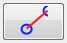

The trajectory defines where the player moves through the scene. Is not compulsory to use, and the player will just simple move to the right or to the left, always from the initial position.
Add node
When this tool is selected, it will be possible to add a new node doing click on an empty espace. You can also edit existing nodes (move/scale)
Add new side 
When this tool is selected, it's possible to create a new side between nodes.
For creating a side, you must click first on a node and then on another.
Choose initial node 
When this tool is selected, you can choose the initial node clicking on it.
Deleted nodes and sides
When this tool is selected, you can delete nodes and sides clicking on them.
General explanation of the edition panel usage.